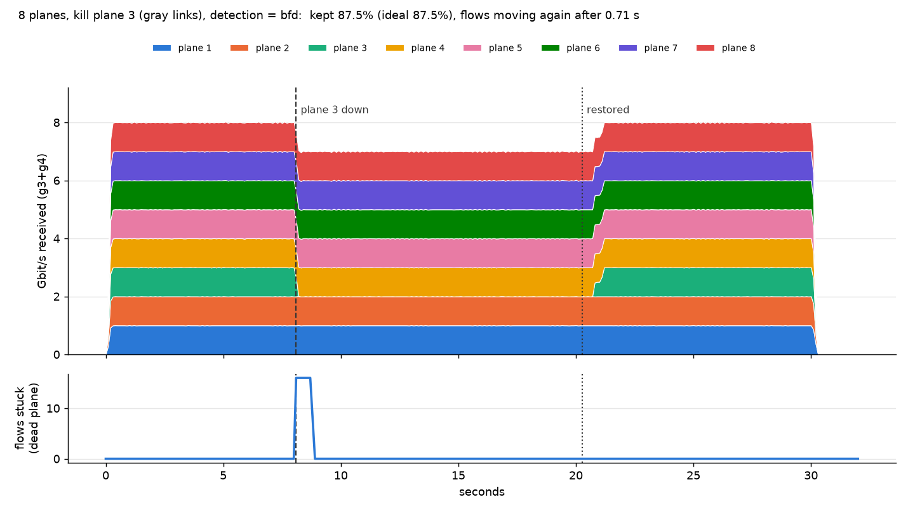
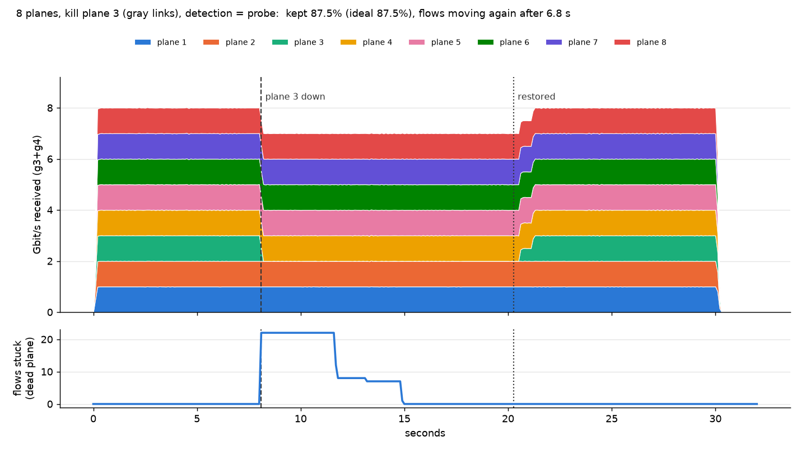
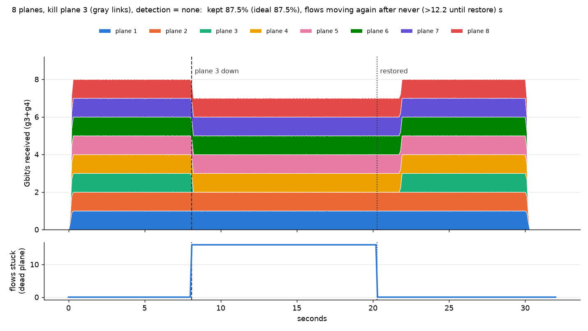

The failure that looks fine
is the dangerous one
NVIDIA says Spectrum-X Multiplane splits each GPU's bandwidth across up to 8 independent two-tier planes. We built that shape from containers: 8 planes, 4 "GPU" hosts with one NIC per plane, 128 iperf3 flows, static routes only. Then we silently killed plane 3.
Bandwidth read 87.5% the whole time. 14 of 128 flows were dead. An all-reduce waits for its slowest flow.
Download the free lab kit (.zip)
All 28 containers, the failure scripts, the BFD / ping-timeout / no-detection switch and the graphs in one containerlab command. MIT licensed. How to run it ↓ · Episode 3's lab · The series on YouTube
On this page
- The idea in plain English
- The topology
- The scoreboard
- Why one slow flow matters (collectives explainer)
- Run it yourself
- The graphs, run by run
- Every recorded run
- What a software lab can't show
- Exercises
- Sources
1The idea in plain English
A normal AI network gives each GPU one fat connection into one fabric. NVIDIA says Spectrum-X Multiplane instead slices that bandwidth into up to 8 planes: 8 separate two-tier networks that never touch each other, with the GPU's SuperNIC (ConnectX-9, 1.6 Tb/s, that is terabits) holding one lane into each. NVIDIA says that gets you more than 128k endpoints in two tiers, and that with 1 of 8 planes down you keep about 90% of your bandwidth.
That "about 90%" is plain 1/N arithmetic. Lose 1 lane of 8 and you have 7/8 = 87.5% left. Our lab gets exactly that number, and so does real hardware: it also keeps roughly 7/8. What real hardware wins on is recovery time. NVIDIA says software load balancing takes 1.08 s to react and the SuperNIC hardware hides a link flap in 2.68 ms.
Not a race against NVIDIA. Our numbers come from a tiny container lab: 4 hosts, 500 Mbit/s per plane, software forwarding. NVIDIA's come from real fabrics and real silicon. Don't compare 0.29 s with 1.08 s; they measure different things on different machines.
The lab asks a narrower question you can answer in software: when a plane dies, how does a host find out, and what happens to the flows that were on it? There is no routing protocol anywhere. Each plane's switches carry a handful of static routes (a whole plane's config is 8 lines), and Linux ECMP on each host spreads flows across the 8 NICs by a 5-tuple hash.
2The topology
8 planes, each its own 2-leaf + 1-spine fabric (FRR 10.5.5, static routes only), 4 GPU hosts g1..g4 with NIC ethN into plane N and address 10.255.0.N on loopback. 28 containers. Each NIC is shaped to 500 Mbit/s, so one GPU = 8 x 500 = 4 Gbit/s and 8 planes of load show as 8 Gbit/s per pair.
One plane is drawn with its two leaves and spine; the other seven are identical and share nothing with it. cat configs/p3-spine.frr.conf in the kit shows the whole routing story for plane 3.
3The scoreboard
Real numbers from the on-camera runs on 8 November: 128 TCP flows (64 each from g1 to g3 and g2 to g4), plane 3 of 8 killed.
The gray failure. We took down only the leaf-to-spine links of plane 3. The GPU NICs stay lit, the host sees a healthy carrier, and the plane quietly black-holes whatever is sent to it. With no detection, 14 of the 128 flows were dead for the entire run while the bandwidth meter said 87.5%. That looks like a clean "one plane down" result. It is not.
How long until the stuck flows move again
Bars are linear, 0 to 13 s. Detection is not the same as recovery: ping timeouts noticed the failure at 3.77 s, but the flows were not moving again until 6.69 s, because TCP's retransmit timer backs off (0.2, 0.4, 0.8, 1.6, 3.2 s ...) and a flow that lost packets just sits until its next retry lands on a working path. BFD fixed the route in 0.165 s and the stuck flows were moving 0.29 s after the failure, close to Linux's default 200 ms minimum RTO. We left that 200 ms default alone on purpose (see the exercises).
Why a cable pull is easy and a gray failure is hard. Pull the whole plane (NIC loses carrier) and the Linux kernel drops that nexthop by itself in 0.21 s, even with no detection. A gray failure gives the kernel nothing to react to. You need something watching the path itself: BFD, probes, or NVIDIA's hardware.
4Why one slow flow matters
Training does not use the average flow. In an all-reduce every GPU waits until the last piece arrives before the step can finish. 14 dead flows out of 128 means every step stalls for as long as those 14 stay stuck, even though the meter shows 87.5% of the bandwidth moving. This explainer (with audio) walks through the collectives step by step.
Prefer a full page? Open the explainer on its own.
5Run it yourself
Needs Linux with Docker, containerlab, sudo and python3 with the venv module (first run pip-installs matplotlib for the graphs). The first up pulls quay.io/frrouting/frr:10.5.5 and builds a small image multiplane/gpu:10.5.5 on top of it (iperf3, python3, iputils). 28 containers; expect a busy machine and fan noise, and shut it down when you are done.
$ unzip multiplane-lab.zip && cd multiplane-lab
$ ./lab.sh up # builds the image if missing, deploys 28 containers, shapes NICs, BFD on (about 20 s)
$ ./lab.sh status # g1 reaches g3 over 8 next hops, 24/24 BFD sessions up
$ ./lab.sh watch # second terminal: live per-plane Gbit/s
$ ./lab.sh load 120 # 120 seconds of load: 128 TCP flows, ~8 Gbit/s per GPU pair
$ ./lab.sh kill 3 --gray # plane 3 goes silent (fabric links only; NICs stay lit): total drops to ~7.0 Gbit/s
$ ./lab.sh restore 3
$ ./lab.sh load stop
$ ./lab.sh measure --mode bfd --gray # recorded run: 30 s, kill at 8 s, restore at 20 s; CSVs + graph.png
$ ./lab.sh measure --mode probe --gray
$ ./lab.sh measure --mode none --gray
$ column -s, -t results/summary.csv
$ ./lab.sh down # destroy itThe README has the 10-step run sheet and every script. Tested end to end from the shipped zip on Ubuntu with containerlab: up in about 18 s, 8 next hops, 24/24 BFD, and the three gray-failure runs reproduced the pattern (BFD back in well under a second, ping timeouts around 7 s, no detection never). Exact flow counts and tens of milliseconds vary run to run because the 5-tuple hash puts a different number of flows on plane 3 each time. Other BFD runs on this lab (the earlier takes and the kit test) gave 0.69 to 0.71 s instead of 0.29 s: the answer depends on where in TCP's backoff each stuck flow happened to be.
6The graphs, run by run
One graph per detection mode, all for the same gray failure of plane 3 (killed at 8 s, restored at 20 s). Look for the "flows stuck" line: how many flows sit at zero, and for how long.
BFD: stuck flows clear in 0.29 s

Ping timeouts: a stair-step, 6.69 s

No detection: the dead flows never come back

7Every recorded run
All ten runs from build day, including the cable-pull ("all links") cases and the earlier takes. The four at 14:xx are the ones on camera. Throughput kept is 87.5% every time, because 7 of 8 planes is 7/8.
| Time | Detection | Failure | Noticed after | Stuck flows moving again | Flows on plane 3 | Kept |
|---|---|---|---|---|---|---|
| 13:16 | BFD 100 ms x 3 | silent (gray) | 0.225 s | 0.71 s | 16/128 | 87.5% |
| 13:18 | BFD 100 ms x 3 | cable pull | kernel sees carrier | 0.22 s | 3/128 | 87.6% |
| 13:18 | ping timeouts 1 s x 3 | silent (gray) | 3.857 s | 6.8 s | 22/128 | 87.5% |
| 13:19 | ping timeouts 1 s x 3 | cable pull | kernel sees carrier | 0.23 s | 5/128 | 87.5% |
| 13:20 | none | silent (gray) | never | never | 16/128 | 87.5% |
| 13:22 | BFD 100 ms x 3 | silent (gray) | 0.2 s | 0.7 s | 16/128 | 87.5% |
| 14:08 (on camera) | BFD 100 ms x 3 | silent (gray) | 0.165 s | 0.29 s | 13/128 | 87.7% |
| 14:09 (on camera) | ping timeouts 1 s x 3 | silent (gray) | 3.768 s | 6.69 s | 14/128 | 87.5% |
| 14:11 (on camera) | none | silent (gray) | never | never | 14/128 | 87.5% |
| 14:14 (on camera) | none | cable pull | kernel sees carrier | 0.21 s | 2/128 | 87.6% |
8What a software lab can't show
Can
The architecture (independent planes, one NIC per plane, multipath across planes, no routing protocol), the 1/N bandwidth arithmetic (7/8 = 87.5%, close to NVIDIA's "about 90%"), and how much detection time matters, which we measured ourselves.
Can't
- NVIDIA's 2.68 ms. NVIDIA says that comes from SuperNIC hardware doing per-packet load balancing and failover. Here the NIC is a veth, failover is a kernel route change, and the recovery floor is TCP's 200 ms minimum RTO. We spread flows, not packets.
- Real scale. 500 Mbit/s per plane, software forwarding, 4 hosts. 128k endpoints is a radix calculation, not something to demo.
- NVIDIA's 1.08 s software load balancing. Our "ping timeouts" mode is a stand-in for the idea, not their setup. And our 0.29 s with BFD is not "faster than NVIDIA": different machine, different measurement.
- Real hardware wins on recovery time, not bandwidth kept. Both keep about 7/8. The difference is how long the flows on the dead plane stay stuck.
9Exercises
- Lower the RTO per route. Linux can lower TCP's minimum retransmit timeout per route (
ip route ... rto_min 20ms); we kept the 200 ms default. Innoneorprobemode the routes are ordinary kernel routes, so set it on g1's and g2's routes (docker exec clab-multiplane-g1 ip route show 10.255.0.3, thenip route changewithrto_minadded, on every host that sends). Predict first: what should happen to the 6.69 s ping-timeout figure and the 0.29 s BFD figure? Then re-run./lab.sh measure --mode probe --gray. - Four planes.
PLANES=4 python3 gen.py && ./lab.sh down && ./lab.sh up. Predict the throughput kept when plane 3 dies (hint: 3/4). Then check whether more flows land on the dead plane per plane. - Tune the probe.
PROBE_INTERVAL=0.2 PROBE_MISSES=3 ./lab.sh detect probe. How far down can plain probing go before it flaps on a healthy plane? How does detection time map to recovery time now that TCP's backoff is the other half? - Watch it live. Run
./lab.sh watchwhile youkill 3 --graywith no detection (./lab.sh detect none), and read the per-plane rates. Plane 3 goes to zero, and the total says 7 Gbit/s. Which number would your dashboard alert on? - Flip the failure. Compare
kill 3 --graywithkill 3(cable pull) innonemode and explain, from what the kernel can see, why one recovers in 0.21 s and the other never does.
10Sources
- NVIDIA, "Giga-scale AI Ethernet evolution: how Spectrum-X Ethernet rewrites the rules" (Aug 2026; NVIDIA repeated it at OCP in Oct 2026): https://developer.nvidia.com/blog/giga-scale-ai-ethernet-evolution-spectrum-x-ethernet-rewrites-rules/. Every NVIDIA figure on this page (128k endpoints, about 90% with 1 of 8 planes down, 1.08 s software load balancing, 2.68 ms in SuperNIC hardware, ConnectX-9 at 1.6 Tb/s) is "NVIDIA says" from this post.
- Episode 3 lab (SRv6, no routing protocol, the host steers around a dead path): https://www.grahampaasch.com/labs/srv6-no-routing
- Episode 2 lab (eBGP vs OSPF): https://www.grahampaasch.com/labs/bgp-vs-ospf
- Episode 1 lab (the eBGP AI-cluster fabric): https://www.grahampaasch.com/labs/ai-fabric
- containerlab: containerlab.dev · FRRouting 10.5.5 BFD and static routes: docs.frrouting.org
More: episode 3's lab · episode 2's lab · episode 1's lab · AI Agents Build the Lab on YouTube · how Graham runs the agent team that built this